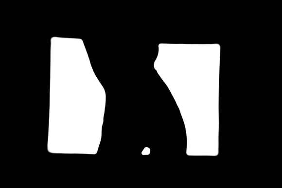
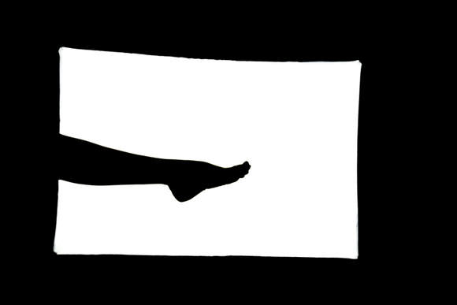
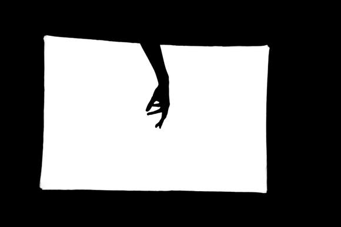

HOE VANG IK GEESTEN :
Ik had nog nooit eerder een geest gezien en dit is de reden waarom ik dit schrijf. Ik heb een ontdekking gedaan. Al jaren ben ik bezig met het onderzoeken en maken van een geestenvanger. Dit is een apparaat waarmee je de geesten kan zien en hun beweging mee kan vastleggen. Het apparaat werkt me een sensor die een foto neemt wanneer er activiteit aanwezig is. Het beeld is als een soort röntgenfoto, je ziet enkel de silhouetten. Ik heb de geest op beeld kunnen vastleggen en kan nu aan de wereld bewijzen dat ze echt bestaan en dat er leven na de dood is.
MARIE VAN DUN :
Dit zijn de beelden die ik van een geest heb gemaakt. Het zijn de lichaamsdelen van de geest. Aan de vorm te zien is het een vrouw geweest. Na lang onderzoek blijkt het om de 18 jarige Marie Van Dun te gaan. Zij was het dienstmeisje van een rijke familie uit de 19de eeuw. Ze blijkt één van de laatste slachtoffers van de pest te zijn en is hieraan overleden. Ze zweeft nog steeds in deze wereld rond omdat ze nog geen vrede heeft gevonden met het feit dat ze zo jong overleden is en geen toekomst heeft kunnen bouwen.

  